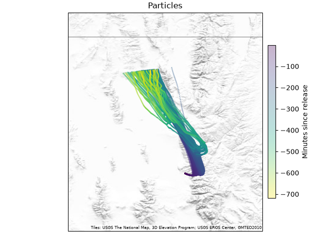
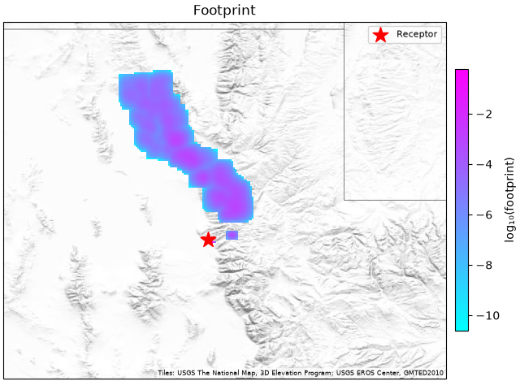

Checking A Run#
This page is for before a run and after it. Before: what stilt check
finds in a project’s inputs. After: which simulations finished, why some
did not, and what to do when a footprint looks wrong.
Before a run#
The first failures a new project meets are in its inputs: a met folder
with a typo, met files that miss some receptor’s hours, a receptor off the
grid. stilt check finds them before HYSPLIT starts. It reads the
project’s files and one met file’s header for each met, and runs and
downloads nothing:
$ stilt check ./my_project
Project: /data/my_project receptors=3
Variants: hrrr (met hrrr, footprint), hrrr-err (met hrrr, particles only)
check variant receptor message
met_files hrrr, hrrr-err 202107150600_-111.848_40.766_10 no met file for 2021-07-14 12:00
met_files hrrr, hrrr-err 202107150700_-111.848_40.766_10 no met file for 2021-07-14 12:00
met_files hrrr, hrrr-err 202107150600_-114.2_40.766_10 no met file for 2021-07-14 12:00
grid hrrr 202107150600_-114.2_40.766_10 longitude -114.2 and latitude 40.766 are outside the footprint grid (-113 to -110.5 longitude, 40 to 42 latitude)
Found 4 problems: met_files 3, grid 1
It checks every variant. Variants that share what a check looks at, such
as a met and a run length, share its rows, and the variant column lists
them. Each check shows its first ten rows and counts the rest. It exits
with 0 when it finds nothing, 1 when it lists anything, and 2 when its
command line is wrong or the project’s files are invalid.
Check |
What it found |
What to do |
|---|---|---|
|
A met’s |
Correct |
|
A receptor’s run needs a met file that is not there. The message
names the hours of the files, each as long as |
Add the files, or check |
|
With |
Widen |
|
A release point of a receptor lies outside the variant’s footprint grid. Only the particles that travel into the grid add to its footprint, and a footprint with none is empty. |
Widen the grid. A receptor meant to lie outside it, such as one far downwind, is still listed, and the exit code is 1. |
|
The |
|
|
The table has no kernel for a receptor, which fails its footprint. |
Add the receptor’s kernel. If the table’s ids look like the receptors’ with other digits, the ids were made from different coordinates. |
|
The table has a kernel for an id that is no receptor of the project. The run does not need it. |
Nothing, if the table is shared. Otherwise look for ids that differ from the receptors’ in a digit. |
stilt check looks for files, not inside them. A run that passes can still
fail as MET_COVERAGE: a file that is damaged or cut short is found when
the run opens it, and a receptor outside the domain of the files, when HYSPLIT
starts it (the reasons are below).
In Python, project.check() is the same table, one row for each thing
found. It is empty when there is none:
In [1]: import stilt
In [2]: project = stilt.Project("./my_project")
In [3]: project.check()
Out[3]:
Empty DataFrame
Columns: [check, variant, receptor, message]
Index: []
The sample project has everything its runs need, so the table is empty. A
table with rows is a pandas DataFrame, so problems = project.check() and
problems[problems.check == "met_files"] select the receptors that lack
met files.
Where each simulation stands#
stilt status counts the simulations of a project, per variant, and the
failed ones by reason. Then it lists the output’s settings folders
(Projects And Variants):
$ stilt status ./my_project
Project: /data/my_project total=1200 complete=1150 failed=42 interrupted=0 pending=8
failed: MET_COVERAGE 34, TIMEOUT 8 (why: each one's .failure.yaml, under /data/output/logs)
Output: /data/output
particles settings=hrrr-5d01e7 1,150 files hrrr
footprints settings=hrrr-93278c 1,150 files hrrr
In Python, project.status() is the same, one row per simulation:
In [4]: status = project.status()
In [5]: status.state.value_counts()
Out[5]:
state
complete 4
failed 0
interrupted 0
pending 0
Name: count, dtype: int64
In [6]: status[status.state == "failed"][["receptor", "variant", "reason", "message"]]
Out[6]:
Empty DataFrame
Columns: [receptor, variant, reason, message]
Index: []
The sample project has no failures, so the last table is empty.
Each simulation is in one of four states. The state comes from the files in the output directory, so it is the same whoever asks and whenever.
State |
What it means |
What to do |
|---|---|---|
|
The result files its variant makes exist in the output directory. Today that is the particle file, and the footprint file when the variant has a grid. |
Nothing. A rerun skips it. |
|
The last run failed. A failure record says why (below). |
Fix the cause and run again. Only the unfinished simulations run. |
|
The transport model’s run started and was stopped before it finished: a time limit, preemption, Ctrl-C, or a killed process. |
Run again. A Slurm task that gets its two-minute warning requeues
itself; the rest are picked up by the next |
|
The transport model has not run yet, or the particles exist and the footprint is not made yet. |
Run the project. |
A footprint that is not made yet is pending whether its step never
started or was stopped partway. The files cannot tell those apart: a
footprint variant added later, on particles that already exist, leaves
the same files.
stilt run says how its own simulations ended in its exit code: 0 when
all are complete, 1 when some failed, and 3 when some were interrupted. It
exits with 2 when its command line is wrong. A script or a scheduler can
rerun on 3, and stop to look on 1.
Why a simulation failed#
A failed simulation does not stop the others. The worker writes a failure
record, <receptor id>.failure.yaml, in the output’s logs/ tree, and
goes on. A failed run’s record is under its particles’ settings folder,
beside the run’s log. A failed footprint’s record is under the footprint’s
own settings folder (Output Layout). The record is removed
when the result is written, so a simulation that later succeeds carries no
stale note. sim.failure reads it:
>>> sim = project.simulation(receptor_id, "hrrr")
>>> sim.failure
{'step': 'particles', 'reason': 'MET_COVERAGE',
'message': 'HYSPLIT: start point not within (x,y,t) any data file',
'time': '2026-10-03T21:14:05+00:00'}
step is particles when the transport model failed. That fails every
variant that shares those particles. It is footprint when only that
variant’s footprint failed. message is the line of the transport model’s
log that says what went wrong. An unexpected error, such as a bug, also has a
traceback.
The reasons#
Reason |
What happened, and what to do |
|---|---|
|
The meteorology does not cover the run. The message says which:
|
|
The met files do not all have the same time step, such as hourly and 3-hourly files mixed in one directory. Keep one product per met. |
|
The transport model ran but wrote no particles. Read the log
( |
|
HYSPLIT stopped with a Fortran error, which the message names. Read
the log and the kept workdir’s |
|
HYSPLIT reached |
|
The run took longer than |
an error’s name |
Any other error is recorded by its class, such as |
The log and the workdir#
sim.log is the transport model’s log. HYSPLIT runs in a workdir, a
folder of its input and output files. A successful run’s workdir is
removed. A failed run’s is kept under scratch/ in the output directory,
and sim.kept_workdir is where. For HYSPLIT it holds CONTROL,
SETUP.CFG, and MESSAGE, enough to rerun hycs_std by hand. Set
keep_workdir: true under execution: to keep every run’s workdir.
A run cut off partway leaves its log, which starts with a line saying when
and on which node it started. status() calls a simulation
interrupted when its log exists and it has no particles and no failure
record.
Empty footprints#
Sometimes a simulation runs fine but no particle reaches the footprint grid. PYSTILT then writes a footprint file with no cells, marked empty. The simulation is complete, so reruns skip it:
sim.has_footprint # True
sim.footprint is None # True: no particle reached the grid
project.footprints() gives an empty footprint no row and lists it in
attrs["empty"], and a Jacobian lists them in H.empty. An empty
footprint is not a footprint of zeros. The transport never connected the
receptor to your grid, so treating it as “the model says zero” in a
comparison or an inversion would be wrong. If you see many, the grid is
too small or not upwind: plot the particles (below) and widen it.
My footprint looks wrong#
Start from the particles. A map of them shows where the air came from, whatever the footprint grid:
In [7]: sim = project.simulation("202101150800_-111.848_40.766_10", "hrrr")
In [8]: sim.particles.stilt.plot.map();
In [9]: sim.footprint.stilt.plot.map();




Then check, in order:
- The time
Receptor times are UTC. A time in local time puts the release hours off, and with it every trajectory.
- The release height
Altitudes are above ground unless the receptor says
altitude_ref="msl". A tower inlet given above sea level as if above ground starts the particles high above the boundary layer, and the footprint is weak and far away.- The grid
The footprint covers only the grid. Particles that leave it add nothing, so a footprint cut off at an edge needs a wider grid.
- The length of the run
n_hourssets how far back the particles go. A footprint that stops short of a source you expect may need a longer run. Particles also stop early when they all leave the met’s domain or its crop, and the run is still complete.sim.particles["age"].abs().max() / 60is how many hours they went. If that is short ofn_hoursand the footprint needs more, widensubgrid_bounds.- The number of particles
Few particles give a patchy footprint. Raise
numpar(500 to 1000 for a tower).- The near-field correction
hnf_plume(on by default) corrects the footprint close to the receptor, where particles have not yet mixed through the boundary layer. Comparing a run with it off shows how much of the footprint is near the receptor.- The units
Footprints are in ppm per (µmol m⁻² s⁻¹), per hour layer. Multiplied by a flux in µmol m⁻² s⁻¹ and summed, they give ppm.
time_integratesums the hours into one layer.
PYSTILT’s footprints match STILT-R’s to a relative 10⁻⁷ per cell, which the fidelity tests check (STILT-R Parity). If yours differ from a STILT-R run of the same receptor, compare the settings first: STILT-R’s names are in Coming From STILT-R.
Why the output has separate trees#
The output directory keeps results, logs, and kept workdirs in separate
trees (particles/, footprints/, logs/, scratch/). Each
results tree holds Parquet files only, so pyarrow, DuckDB, polars, and R
read it as one table, and a log or a failure record beside a result would
break that. Whether a simulation is complete is read from the results
trees alone; the logs tree only explains the ones that are not.